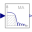
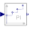
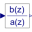
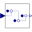
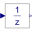
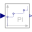
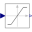
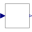

PartialClockedSISOBlock with clocked single input and clocked single output Real signals |
|
Connectors (2)
| u |
Type: RealInput Description: Connector of clocked, Real input signal |
|
|---|---|---|
| y |
Type: RealOutput Description: Connector of clocked, Real output signal |
Extended by (11)
|
Modelica.Clocked.RealSignals.Interfaces Interface for SISO blocks with Real signals that add noise to the signal |
|
|
Modelica.Clocked.RealSignals.Periodic FIR filter defined by coefficients |
|
|  |
Modelica.Clocked.RealSignals.Periodic Moving average filter (= FIR filter with coefficients a = fill(1/n,n), but implemented recursively) |
|  |
Modelica.Clocked.RealSignals.Periodic Discrete-time PI controller |
|  |
Modelica.Clocked.RealSignals.Periodic Discrete-time Transfer Function block |
|  |
Modelica.Clocked.RealSignals.NonPeriodic Delay the clocked input signal for a fractional multiple of the sample period |
|  |
Modelica.Clocked.RealSignals.NonPeriodic Delay the clocked input signal for one sample period |
|  |
Modelica.Clocked.RealSignals.NonPeriodic Discrete-time PI controller with clocked input and output signals (for periodic and aperiodic systems using the parameterization of the continuous PI controller) |
|  |
Modelica.Clocked.RealSignals.Sampler.Utilities.Internal Limit the range of a signal |
|  |
Modelica.Clocked.RealSignals.Sampler.Utilities.Internal DAC quantization effects |
|
Modelica.Clocked.RealSignals.Sampler.Utilities.Internal Delay a clocked signal for at most one period, in order to model a computational delay |